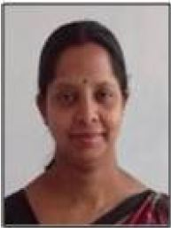
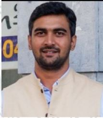
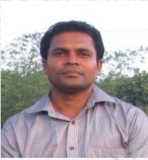
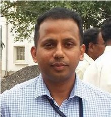
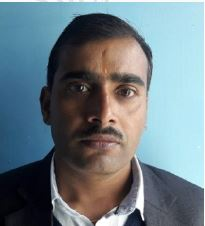
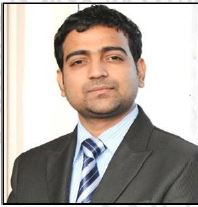
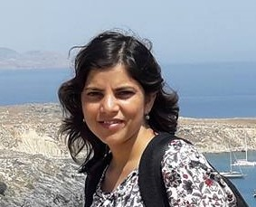

Spatial Analysis and Modelling Laboratory
Centre for Oceans, Rivers,Atmosphere, and Land Sciences (CORAL)
IIT Kharagpur, India
- Home
- About
- Contact
- Lab Group
- News
- Research
- Projects
- Field Sites
- Opportunities
- Field Photos
- Data
- Publications
- Education
- CL60028
- CL60019
- CL69005
- Weblinks
- Journals
Former Personnel

Dr. Smriti Kumari
smriti@hss.iitkgp.ernet.in
Identification of Potential Ecotourism Sites, Sustainability
Assessment and Management in Geospatial Environment.
Guest Faculty,
Malaviya National Institute of Technology (MNIT),
Jaipur, Rajasthan, India
Thesis:
Identification of Potential Ecotourism Sites, Sustainability
Assessment and Management in Geospatial Environment.

Dr. Vishwas Sudhir Chitale
chitalevs@gmail.com
Remote Sensing Analyst-Ecosystems,
Geospatial Solutions,
International Centre for Integrated Mountain Development
(ICIMOD),
Kathmandu, Nepal.
Thesis:
Analysis of plant diversity and endemism distribution in
biodiversity hotspots in India

Dr. Debabrata Ray
deburrii@yahoo.co.in
Scientist,
Rubber Research Institute of India,
Rubber Board, Government of India,
Tripura, Agartala, India
Thesis:
Assessing invasive potential of Heveabrasiliensis using ecological
niche modelling approach

Dr. Soumit Kumar Behera
soumitkbehera@gmail.com
Scientist,
National Botanical Research Institute,
Lucknow, India
Thesis:
Net Primary Productivity and Carbon Flux Assessment
in Tropical Forest Ecosystems of India

Dr. Narpati Sharma
naresh_hvs@yahoo.co.in
Assistant Scientific Officer,
Department of Science & Technology,
Government of Sikkim,
Gangtok, India
Thesis:
Species richness and productivity pattern along
altitudinal gradient in east district of Sikkim, India

Dr. Shafique Matin
shafiquematin@gmail.com
Research Officer,
Agrifood Business and Spatial Analysis, Rural Economy and
Development Programme,
Teagasac, Ashtown,
Dublin 15, Ireland
Thesis:
Characterizing land degradation in Indian Ganga River Basin using
geoinformatics.
 Dr. Rajendra Mohan Panda
Dr. Rajendra Mohan Panda
rmp.iit.kgp@gmail.com
Research Area:
Spatial Ecology, Species Distribution Modelling, Gradient
Pattern Analysis, Invasive Species Risk Assessment and
Distribution, Statistical Modelling and Data Analysis, Wildlife
Management, Biodiversity Conservation

Dr. Poonam Tripathi
tripathy.poonam@gmail.com
International Centre for Integrated Mountain Development (ICIMOD),
Kathmandu, Nepal.
Thesis Title:
Ensemble Modelling of Plant Diversity in Biogeographic Regions of India
Dr. Pulakesh Das
pdas1987@coral.iitkgp.ernet.in
Research Area:
Impact of LULC change on Hydrological parameters
Forest Cover Resilience
Land Use Land Cover (LULC) Mapping, Modeling, Prediction
Dr. Swapna Mahanand
Thesis Title:
Congruence between Plant Dispersal and Diversity with Environmental Heterogeneity
Current Position
Research Associate
Ashoka Trust for Research in Ecology and The Environment (ATREE),
Bengaluru, Karnataka, India.